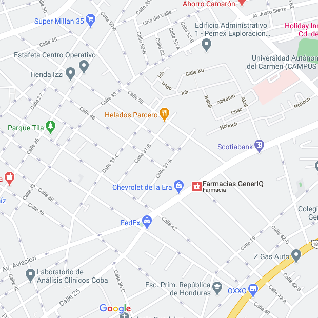

Cats seldom make any noise while walking or running. Cats have bright eyes and they can even see in the dark. Cat is found all over the world and milk is cats favourite. Many people keep cats as their pets to scare away the mice. My pet cat is Peter, and he is a Siamese cat. My younger brother named our cat Peter because he thought it would be funny to give our cat a human name. Most of my relatives also think that that is funny because their pet cats have names like ‘Fluffy.’ I wanted to name my cat Garfield, as the comic because I love reading Garfield comics, but now his name is Peter.
My Cats:3
Gallery


Location
I live in Cd. Del Carmen, a warm city among Campeche, which is kind of cute. In the next map you can identify where do I live, and if you want, visit me sometime and take photos of my cute and adorable cats.
